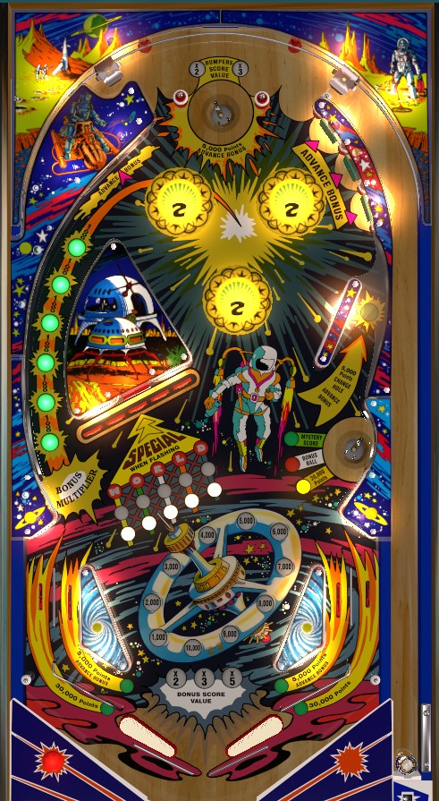

Future World is the 4-player version. Space City is the 1-player version with some minor scoring changes which are mentioned at the end of the guide.
If playing for score, your best friend will be the right saucer any time it is lit for Mystery Score or 20,000 points. To change what is lit at the saucer, shoot the right side lane just above the saucer and press the rollover button there. Drop target completions progress toward lighting the Special, which can score a free game, extra ball, or 50,000 points. Bonus is advanced by in lanes, the top right standup targets, and the wall switch near the top left bumper; bonus multiplier is advanced by pressing all six buttons in the left orbit.
The below picture of Future World's playfield was taken from the VPX recreation by JPSalas.

Bumpers start each ball scoring 100 points per hit. The top saucer scores 5,000 points and a bonus advance, and the first two trips to the top saucer increase the bumper value to 200 and 300 points respectively. The bumpers themselves do not change their lighting to reflect this; the bumper multiplier is only shown at the inserts just above the top saucer.
Each drop target down scores 5,000 points and advances the lit in front of that target: first to the lower white light, then to the middle white light, then to a World letter. The red standup target behind the middle drops scores 10,000 points. Completing the drop target bank resets it, unless all 5 drop targets have been advanced to where World is spelled, in which case the red target will be lit for Special and the drop targets will not reset until the Special is collected. Special can score a free game, an extra ball, 50,000 points, or "Superbonus", a light on the backglass that indicates to operators that a player has won a special prize such as a free drink. On a 3-ball game, the first row of lights is spotted immediately, so it only takes 2 completions of the drop targets to light the first Special, but 3 completions in a 5-ball game. In either case, collecting a Special fully resets the sequence, so each further Special requires 3 more drop target completions.
Progress on the drop target advances, including the Special being lit if applicable, carries over from ball to ball. In a single-player game, the drop targets are left alone between balls, but in a multiplayer game, the drop targets will reset at the beginning of every ball.
The right saucer awards the lit value: green is a mystery award, red is an extra ball, and yellow is 20,000 points. To change the lit award, press the rollover button in the right lane just above the saucer, which also scores 5,000 points and a bonus advance. It seems to be significantly more rare to light the saucer for extra ball than to light it for the mystery award or 20,000 points. The mystery award can score 1,000, 5,000, 10,000, 20,000, 30,000, or 40,000 points. A unique tune is played if you get 40,000 from the mystery. The game manual implies that a 50,000 award is possible and that it would also play the special tune, but I have not seen this occur.
Bonus is advanced at many places around the table.
The rollover buttons in the left orbit start out lit, and pressing a lit button will unlight it. These buttons score 1,000 points each whether lit or not. Unlighting all 6 buttons in this orbit will relight them and advance the bonus multiplier in the sequence 2x-3x-5x. Each bonus advance is worth 1,000 points in base bonus. The first bonus advance is not given for free, so it is possible to drain with 0 end of ball bonus. The max bonus is 5x 15,000 = 75,000 points. The bonus cannot be collected mid-ball, and no part of the bonus can ever be carried from ball to ball.
Future World has an almost normal in/out lane setup. Out lanes score 30,000 points, and in lanes score 5,000 points plus a bonus advance. The rails that separate the in lane from the out lane are partially cut off. However, the cut happens just above the angled portion of the in lane. Small posts are present in the out lanes that can be used to nudge an out lane ball back into play. The placement of the gaps in the in lane's rail make it more likely for a ball to be nudge in than for a ball rolling up the in lane to fall out. There is no kickback or center post.
Space City has an identical playfield and largely identical rules. The following changes are observed:
The in lanes, out lanes, top saucer, and right lane have the same scoring as on Future World. I have not been able to find whether drop targets, Specials, bumpers, or the Advance Bonus targets and wall switch at the top of the playfield have a different value than they do on Future World. If you are playing the Space City version, know in advance that building and multiplying the bonus is often much more valuable than it is on Future World.